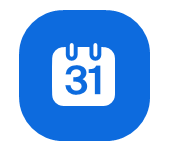

Internal Communication
Communication and Administration
This section provides information about the main communication channels, meeting organization, Zoom access, and office logistics used at the OSC.
Email and LMU Chat (Matrix)
The OSC primarily uses email and LMU Chat (Matrix) for communication.
LMU Chat (Matrix)
Matrix is an open, decentralized platform for real-time communication. LMU hosts its own Matrix server, called LMU Chat, which serves as the central messaging platform for university members.
The recommended application for accessing LMU Chat is Element, which is available for:
- Windows
- macOS
- Linux
- iOS
- Android
LMU Chat is the preferred communication channel for:
- Quick back-and-forth discussions
- Short tasks and questions
- FYIs and informal communication
- Team coordination
Getting Started
For detailed instructions on setting up your Matrix account and installing Element, consult the official LMU documentation:
Once your account is set up, join the OSC workspace using the following invitation link: https://matrix.to/#/#lmu-open-science-center:matrix.lmu.de
You will receive an @lmu.de email account. Malika will submit a ticket to the IT department to initiate the account creation process.
You can access your mailbox via https://xmail.mwn.de. Note that this email will now be the one used by Exchange in services such as LSF and Moodle.
Set up E-Mail transfer
To set up e-mail forwarding from your lmu.de account to your personal e-mail, login in the https://xmail.mwn.de browser, go to Settings, to Options and select Inbox and Sweep rules. Add an Inbox rule and apply to all incoming messages to forward to your personal e-mail address. Save and test by sending an e-mail to your @lmu.de account.
Email should be used for:
- Important communications that need to be documented
- Tasks that cannot be completed immediately
- Formal communication with researchers, instructors, and external organizations
It is still acceptable to communicate with OSC staff through your personal email address and when using Google Workspace platforms.
Meetings schedulers
When scheduling meetings involving multiple participants, it is often helpful to first identify suitable meeting times.
Recommended scheduling tools include:
| Tool | Typical Use |
|---|---|
| When2Meet | Best when participants should indicate availability across several days. |
| TerminPlaner | Best when participants only need to choose among a small number of proposed time slots. |
Zoom
Zoom is the primary platform used for OSC meetings, workshops, and webinars.
If you do not already have a Zoom Pro account, request one through Faculty 11 Help Desk
After receiving a Zoom account, contact it-servicedesk@lmu.de and ask Faculty 11 to add Zoom Webinar Pro access (required for events such as the Open Science Summer School).
This is important because Malika may need to designate you as an alternative host for OSC events.
Logging In
Use your LMU email address together with your LRZ Single Sign-On credentials to activate and access your Zoom account.
LMU Zoom portal: https://lmu-munich.zoom.us/
Scheduling a Zoom Meeting
To schedule a meeting using the Zoom desktop application:
- Sign in to the Zoom desktop application.
- Select the Home tab.
- Click Schedule.

This opens the New Event window.
- Enter a meeting title.
- Specify the date and time.
- Optionally add invitees by entering their names or email addresses.
- Configure additional meeting settings if necessary.
- Click Save.
After scheduling a meeting, always send participants a calendar invitation (e.g., Outlook, Gmail, or an .ics attachment) containing the Zoom link.
Office and Equipment
The OSC office is located in:
| Room | Purpose |
|---|---|
| 3320, Leopoldstr. 13 | Shared office space |
| 3321, Leopoldstr. 13 | Shared conference room used for meetings |
Access to these rooms is provided through a transponder, which Malika will request for you.
Equipment Storage
The office contains important OSC equipment, including:
- 360° conference cameras
- Tripods
- Microphones
- Laptops
- Posters
- Printer access
Most equipment is stored in the gray locker.
The key to the locker can usually be found in Malika’s desk drawer.